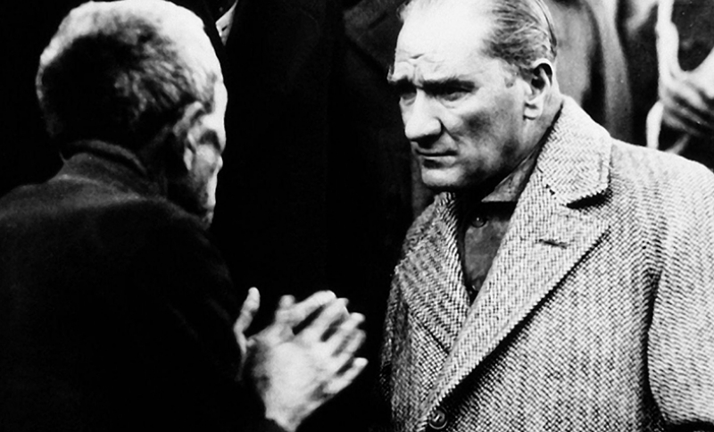

Mustafa Kemal Ataturk
Founder of Republic of Turkey

Mustafa Kemal Ataturk, while listening to the problems of the people.
Here's a time line of Ataturk's life:
- 1881 - Born in Salonika, Greece.
- 1893 - Mustafa enters the Military Preparatory School and his teacher gaves him the "Kemal" name.
- 1895 - Mustafa Kemal enters the Military High School at Manastir.
- 1899 - Mustafa Kemal enters the Military Academy in Constantinople (Istanbul).
- 1902 - Mustafa Kemal graduates from Military Academy and continues his studies at the General Staff College.
- 1905 - Passes out as Staff Captain and is posted for Fifth Army in Syria; revives a secret opposition group in Damascus.
- 1907 - Posted to Third Army headquarters in Salonica.
- 1911 - Posted to general staff in Constantinople (Istanbul).
- 1912 - Appointed commander of Derne sector in Cyrenaica; Italo-Turkish War.
- 1913 - Mustafa Kemal appointed military attaché in Sofia.
- 1915 - Mustafa Kemal leaves Sofia to take up appointment as commander of 19th division for service in Battle of Gallipoli.
-
1919 - Appointed the Inspector of the
Ninth Army Troops.
Kemal elected Chairman of Erzurum Congress. - 1920 - Kemal opens the Grand National Assembly (BMM) in Angora (now Ankara).
-
1921 - Appointed Commander - in - Chief by
the Grand National Assembly.
The battle of Sakarya begins with Turkish troops led by Mustafa Kemal.
Kemal receives the rank of Marshal and the title Gazi (veteran, victorious warrior). -
1922 - Gazi Mustafa Kemal begins to lead
Great Offensive from the hill of Kocatepe.
Mustafa Kemal at the Battle of Dumlupınar.
Enters Izmir.
The Grand National Assembly abolish the Sultanate. -
1923 - Proclamation of the Republic of
Turkey.
Elected first president. - 1934 - The Grand National Assembly of Turkey passes a law granting him the surname "ATATÜRK".
- 1938 - He died in Dolmabahçe Palace in Istanbul.